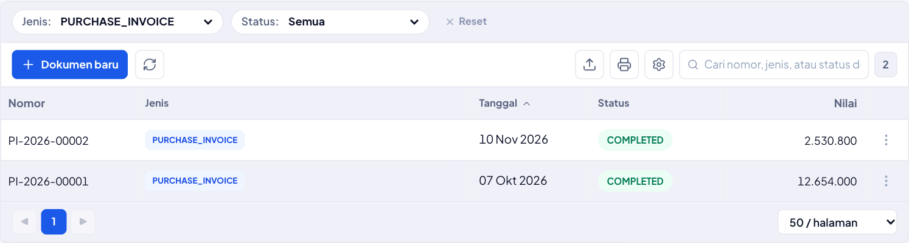
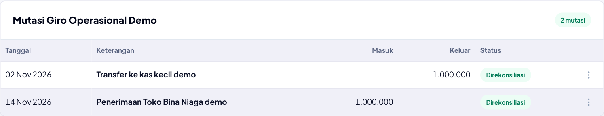
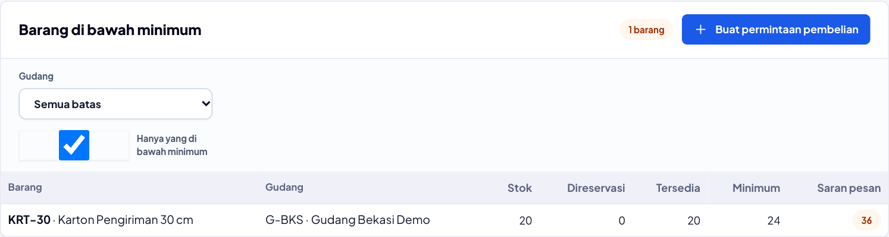
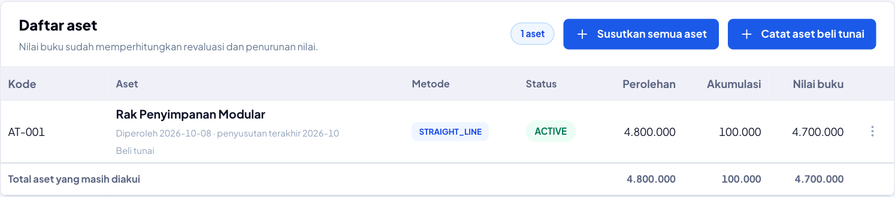
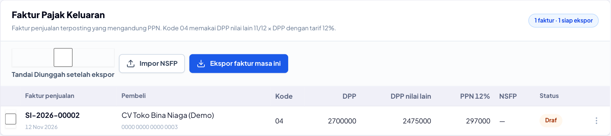
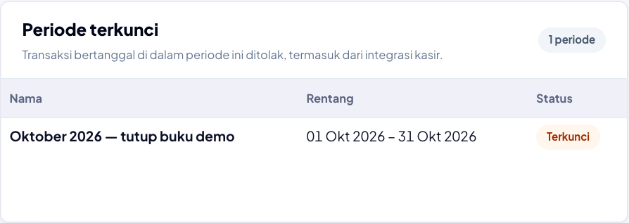
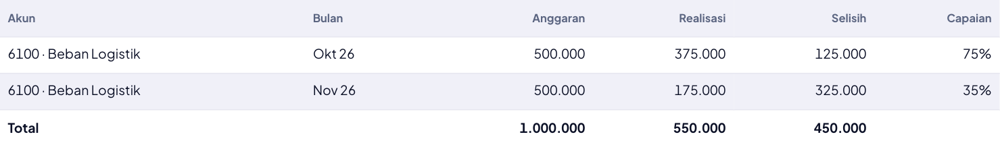

LOKA KASIR ACCOUNTING
Penjualan tercatat. Pembukuannya sudah nyambung?
Kenalan dengan Loka Kasir Accounting.
LOKA KASIR ACCOUNTING
Kenalan dengan Loka Kasir Accounting.
LOKA KASIR ACCOUNTING
Mulai dari faktur, pembayaran, pembelian, dan kas.
Lihat jurnal yang terbentuk saat transaksi diposting.
Pantau laba rugi, neraca, dan arus kas.
Mulai dari saldo awal. Coba satu alur transaksi sampai jurnal dan laporannya.

Coba gratis 14 hari →
PENJUALAN DAN PIUTANG
Satu faktur bisa punya beberapa pembayaran.
PENJUALAN DAN PIUTANG
Nilai faktur dalam contoh demo.
Pembayaran yang sudah diterima.
Saldo yang masih perlu ditagih.
Catat pembayaran pada faktur yang sama. Jika nominal salah, gunakan Riwayat pelunasan untuk membatalkan pembayaran dan memulihkan saldo.

Lihat alur piutang di Accounting →
PEMBELIAN
Catat dua kejadian itu sesuai urutannya.
PEMBELIAN
Tetapkan barang, kuantitas, dan harga yang disepakati.
Catat kuantitas fisik yang benar-benar diterima gudang.
Tautkan ke penerimaan dan catat utang pemasok.
Periksa pesanan, penerimaan, dan faktur. Setelah nilainya cocok, buat Perintah Pembayaran untuk ditinjau dan dieksekusi.

Coba alur pembelian →
KAS DAN BANK
Cocokkan mutasi bank dengan pembukuan.
KAS DAN BANK
Lihat kapan dana benar-benar tercatat di rekening.
Bandingkan nilai mutasi dengan jurnal rekening yang sama.
Cek nama pengirim atau nomor faktur saat ada nominal serupa.
Impor mutasi, cocokkan dengan jurnal, lalu bandingkan saldo akhir rekening dengan buku besar.

Buka Rekonsiliasi Bank →
PERSEDIAAN
Cek jumlah per lokasi sebelum pesan lagi.
PERSEDIAAN
Ini jumlah fisik yang masih tersedia di lokasi.
Gudang Bekasi 4 unit di bawah batas minimum.
Kalau ada stok cukup di lokasi lain, pertimbangkan pemindahan.
Buka Barang Stok Minimum. Buat permintaan internal, atau teruskan kebutuhan ke pembelian bila stok antargudang tidak cukup.

Coba alur persediaan →
ASET TETAP
Kartu aset berisi lebih dari harga beli.
ASET TETAP
Harga perolehan rak dalam contoh demo.
Umur manfaat contoh, dengan residu Rp0.
Ilustrasi penyusutan garis lurus.
Lengkapi kartu aset dan jalankan penyusutan. Kalau rak dipindahkan, catat lokasi barunya agar tim tahu posisi aset.

Jelajahi modul Aset Tetap →
E-FAKTUR CORETAX
Tinjau faktur keluaran sebelum menyiapkan XML.
E-FAKTUR CORETAX
Cocokkan profil pajak perusahaan dan pembeli.
Pilih faktur penjualan yang sudah diposting.
Review dasar pengenaan dan nilai PPN yang tercatat.
Setelah ditinjau, ekspor XML dari Accounting. Lanjutkan unggah di Coretax dan catat nomor faktur yang diterbitkan.

Lihat alur e-Faktur →
TUTUP BUKU
Luangkan waktu untuk tiga pemeriksaan ini.
TUTUP BUKU
Cocokkan saldo dan telusuri mutasi yang belum punya pasangan.
Periksa faktur terbuka dan pembayaran yang belum tercatat.
Cek hasil hitung stok dan penyusutan yang perlu dibukukan.
Buka neraca saldo, laba rugi, dan neraca. Kunci periode setelah tim selesai meninjau angka.

Coba gratis 14 hari →
ANGGARAN
Cocokkan rencana bulanan dengan biaya yang sudah tercatat.
ANGGARAN
Anggaran biaya logistik Oktober dalam contoh demo.
Biaya logistik yang dibukukan pada bulan tersebut.
Selisih antara anggaran dan realisasi.
Buka Anggaran, lalu pilih Lihat realisasi. Bandingkan rencana dengan angka buku besar per akun dan per bulan.

Buka Loka Kasir Accounting →
LOG AKTIVITAS
Pakai riwayat perubahan saat meninjau pembukuan.
LOG AKTIVITAS
Lihat waktu aktivitas yang dicatat sistem.
Periksa pengguna yang melakukan perubahan.
Buka rincian tindakan dan dokumen terkait bila tersedia.
Saat tim menemukan perubahan, lihat catatan aktivitas untuk memahami tindakan sebelum menindaklanjutinya.

Buka Loka Kasir Accounting →